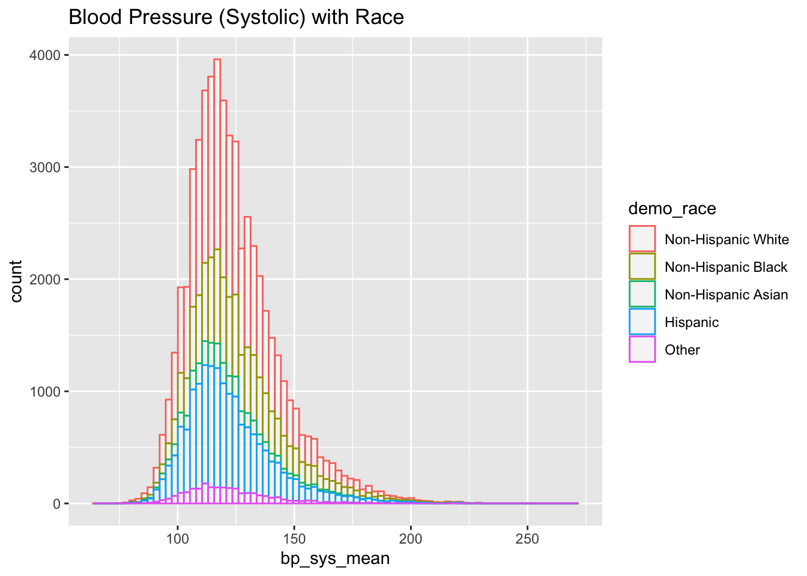
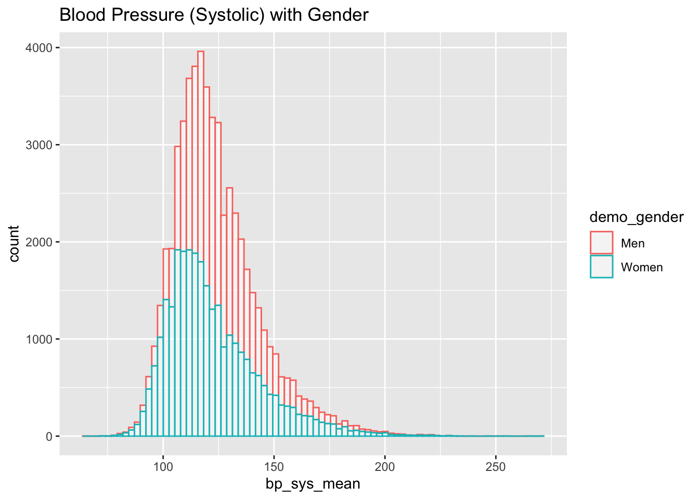
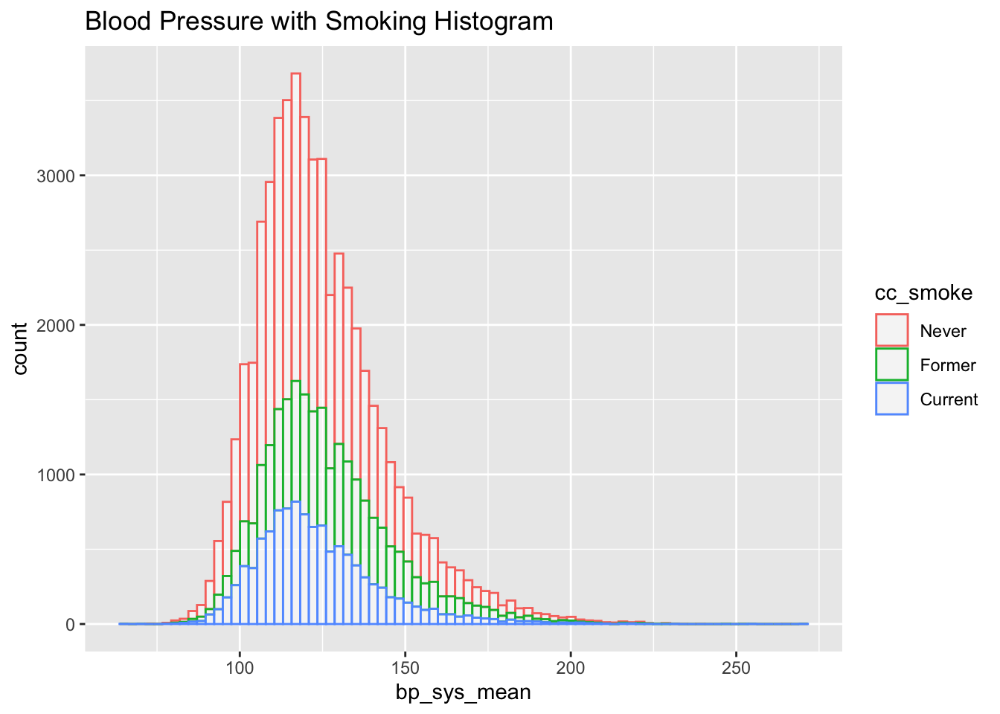
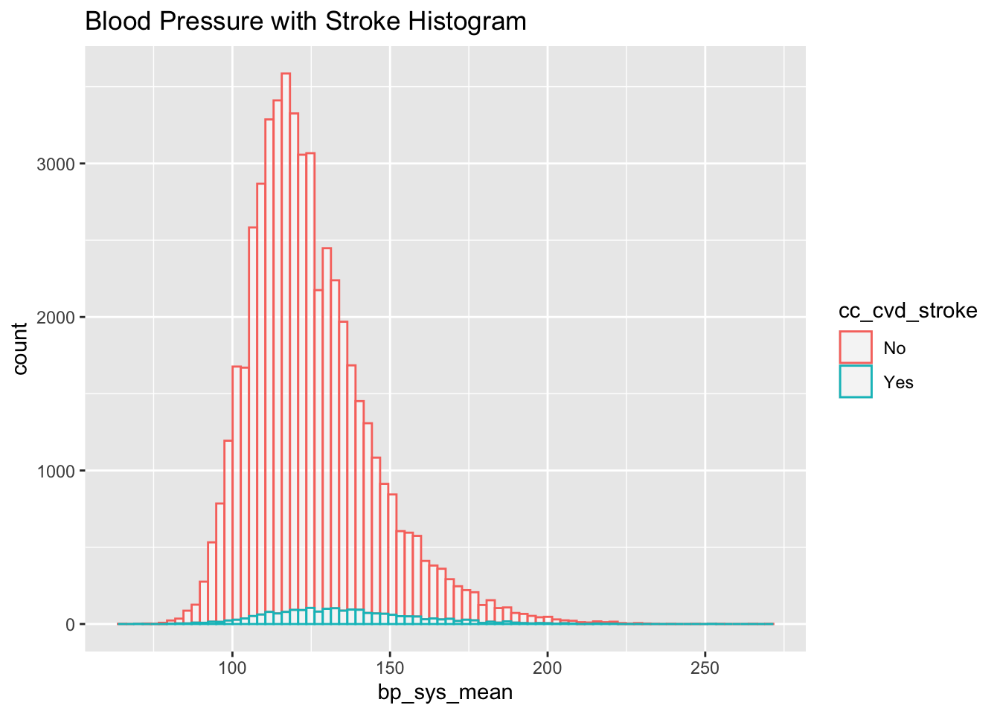

library(dplyr)
library(tidyverse)
library(tibble)
library(ggplot2)
library(data.table)
library(devtools)
library(viridis)
library(hrbrthemes)
#using data specified in this github repository:
install_github("jhs-hwg/cardioStatsUSA")
library(cardioStatsUSA)Data Examination
head(nhanes_data) svy_id svy_weight_mec svy_psu svy_strata svy_year svy_subpop_htn
<num> <num> <num> <num> <fctr> <num>
1: 12 95494.214 2 6 1999-2000 1
2: 21 2910.630 2 3 1999-2000 1
3: 27 1935.098 2 13 1999-2000 1
4: 28 41107.191 2 1 1999-2000 1
5: 56 89768.526 1 12 1999-2000 1
6: 57 102609.750 2 5 1999-2000 1
svy_subpop_chol demo_age_cat demo_race demo_race_black
<num> <fctr> <fctr> <fctr>
1: 1 18 to 44 Non-Hispanic White No
2: 1 18 to 44 Hispanic No
3: 0 18 to 44 Hispanic No
4: 1 18 to 44 Non-Hispanic White No
5: 0 18 to 44 Non-Hispanic White No
6: 1 18 to 44 Non-Hispanic White No
demo_age_years demo_pregnant demo_gender bp_sys_mean bp_dia_mean
<num> <fctr> <fctr> <num> <num>
1: 37 No Men 176.6667 102.00000
2: 18 No Men 121.3333 80.00000
3: 18 No Men 118.0000 78.00000
4: 18 No Men 94.0000 42.66667
5: 21 No Men 121.0000 65.00000
6: 39 No Men 119.3333 85.33333
bp_cat_meds_excluded
<fctr>
1: SBP 160+ or DBP 100+ mm Hg
2: SBP of 130 to <140 or DBP 80 to <90 mm Hg
3: SBP <120 and DBP <80 mm Hg
4: SBP <120 and DBP <80 mm Hg
5: SBP of 120 to <130 and DBP <80 mm Hg
6: SBP of 130 to <140 or DBP 80 to <90 mm Hg
bp_cat_meds_included bp_control_jnc7 bp_control_accaha
<fctr> <fctr> <fctr>
1: taking antihypertensive medications No No
2: SBP of 130 to <140 or DBP 80 to <90 mm Hg Yes No
3: SBP <120 and DBP <80 mm Hg Yes Yes
4: SBP <120 and DBP <80 mm Hg Yes Yes
5: SBP of 120 to <130 and DBP < 80 mm Hg Yes Yes
6: SBP of 130 to <140 or DBP 80 to <90 mm Hg Yes No
bp_control_escesh_1 bp_control_escesh_2 bp_control_140_90 bp_control_130_80
<fctr> <fctr> <fctr> <fctr>
1: No No No No
2: Yes No Yes No
3: Yes Yes Yes Yes
4: Yes Yes Yes Yes
5: Yes Yes Yes Yes
6: Yes No Yes No
bp_uncontrolled_jnc7 bp_uncontrolled_accaha bp_uncontrolled_escesh_1
<fctr> <fctr> <fctr>
1: Yes Yes Yes
2: No Yes No
3: No No No
4: No No No
5: No No No
6: No Yes No
bp_uncontrolled_escesh_2 bp_uncontrolled_140_90 bp_uncontrolled_130_80
<fctr> <fctr> <fctr>
1: Yes Yes Yes
2: Yes No Yes
3: No No No
4: No No No
5: No No No
6: Yes No Yes
bp_med_use bp_med_recommended_jnc7 bp_med_recommended_accaha
<fctr> <fctr> <fctr>
1: Yes Yes Yes
2: No No No
3: No No No
4: No No No
5: No No No
6: No No No
bp_med_recommended_escesh bp_med_n_class bp_med_n_pills bp_med_combination
<fctr> <fctr> <fctr> <fctr>
1: Yes One One No
2: No None None No
3: No None None No
4: No None None No
5: No None None No
6: No None None No
bp_med_pills_gteq_2 bp_med_ace bp_med_aldo bp_med_alpha bp_med_angioten
<fctr> <fctr> <fctr> <fctr> <fctr>
1: No Yes No No No
2: No No No No No
3: No No No No No
4: No No No No No
5: No No No No No
6: No No No No No
bp_med_beta bp_med_central bp_med_ccb bp_med_ccb_dh bp_med_ccb_ndh
<fctr> <fctr> <fctr> <fctr> <fctr>
1: No No No No No
2: No No No No No
3: No No No No No
4: No No No No No
5: No No No No No
6: No No No No No
bp_med_diur_Ksparing bp_med_diur_loop bp_med_diur_thz
<fctr> <fctr> <fctr>
1: No No No
2: No No No
3: No No No
4: No No No
5: No No No
6: No No No
bp_med_renin_inhibitors bp_med_vasod htn_jnc7 htn_accaha htn_escesh
<fctr> <fctr> <fctr> <fctr> <fctr>
1: No No Yes Yes Yes
2: No No No Yes No
3: No No No No No
4: No No No No No
5: No No No No No
6: No No No Yes No
htn_aware htn_resistant_jnc7 htn_resistant_accaha htn_resistant_jnc7_thz
<fctr> <fctr> <fctr> <fctr>
1: Yes No No No
2: No No No No
3: No No No No
4: No No No No
5: No No No No
6: Yes No No No
htn_resistant_accaha_thz chol_measured_never
<fctr> <fctr>
1: No Cholesterol has been measured previously
2: No Cholesterol has been measured previously
3: No <NA>
4: No Cholesterol has been measured previously
5: No <NA>
6: No Cholesterol has been measured previously
chol_measured_last chol_total chol_total_gteq_200
<fctr> <num> <fctr>
1: 1 to 5 years ago 156 No
2: <NA> 161 No
3: <NA> NA <NA>
4: <NA> 151 No
5: <NA> NA <NA>
6: >5 years ago (possibly never) 243 Yes
chol_total_gteq_240 chol_hdl chol_hdl_low chol_trig chol_trig_gteq_150
<fctr> <num> <fctr> <num> <fctr>
1: No 38 Yes 146 No
2: No 34 Yes 120 No
3: <NA> NA <NA> NA <NA>
4: No 64 No 52 No
5: <NA> NA <NA> NA <NA>
6: Yes 46 Yes 97 No
chol_ldl chol_ldl_5cat chol_ldl_lt_70 chol_ldl_gteq_70 chol_ldl_lt_100
<num> <fctr> <fctr> <fctr> <fctr>
1: 90.87551 70 to <100 mg/dL No Yes Yes
2: 104.23559 100 to <130 mg/dL No Yes No
3: NA <NA> <NA> <NA> <NA>
4: 75.74248 70 to <100 mg/dL No Yes Yes
5: NA <NA> <NA> <NA> <NA>
6: 179.25406 130 to <190 mg/dL No Yes No
chol_ldl_gteq_100 chol_ldl_gteq_190 chol_ldl_persistent chol_nonhdl
<fctr> <fctr> <fctr> <num>
1: No No No 118
2: Yes No No 127
3: <NA> <NA> <NA> NA
4: No No No 87
5: <NA> <NA> <NA> NA
6: Yes No No 197
chol_nonhdl_5cat chol_nonhdl_lt_100 chol_nonhdl_gteq_100
<fctr> <fctr> <fctr>
1: 100 to <130 mg/dL No Yes
2: 100 to <130 mg/dL No Yes
3: <NA> <NA> <NA>
4: < 100 mg/dL Yes No
5: <NA> <NA> <NA>
6: 160 to <220 mg/dL No Yes
chol_nonhdl_gteq_220 chol_med_use chol_med_use_sr chol_med_statin
<fctr> <fctr> <fctr> <fctr>
1: No No No No
2: No No No No
3: <NA> <NA> <NA> <NA>
4: No No No No
5: <NA> <NA> <NA> <NA>
6: No No No No
chol_med_ezetimibe chol_med_pcsk9i chol_med_bile chol_med_fibric_acid
<fctr> <fctr> <fctr> <fctr>
1: No No No No
2: No No No No
3: <NA> <NA> <NA> <NA>
4: No No No No
5: <NA> <NA> <NA> <NA>
6: No No No No
chol_med_atorvastatin chol_med_simvastatin chol_med_rosuvastatin
<fctr> <fctr> <fctr>
1: No No No
2: No No No
3: <NA> <NA> <NA>
4: No No No
5: <NA> <NA> <NA>
6: No No No
chol_med_pravastatin chol_med_pitavastatin chol_med_fluvastatin
<fctr> <fctr> <fctr>
1: No No No
2: No No No
3: <NA> <NA> <NA>
4: No No No
5: <NA> <NA> <NA>
6: No No No
chol_med_lovastatin chol_med_other chol_med_addon_use
<fctr> <fctr> <fctr>
1: No No No
2: No No No
3: <NA> <NA> <NA>
4: No No No
5: <NA> <NA> <NA>
6: No No No
chol_med_addon_recommended_ahaacc chol_med_statin_recommended_ahaacc
<fctr> <fctr>
1: No No
2: No No
3: <NA> <NA>
4: No No
5: <NA> <NA>
6: No No
chol_med_recommended_ever ascvd_risk_vh_ahaacc cc_smoke cc_bmi
<fctr> <fctr> <fctr> <fctr>
1: No No Never 30 to <35
2: No No <NA> 35+
3: <NA> <NA> <NA> 25 to <30
4: No No <NA> <25
5: <NA> <NA> Former <25
6: No No Never 25 to <30
cc_diabetes cc_ckd cc_acr cc_egfr cc_hba1c cc_egfr_lt60 cc_acr_gteq30
<fctr> <fctr> <num> <num> <num> <char> <char>
1: No Yes 34.646465 83.19409 5.2 No Yes
2: No No 1.600000 117.88244 5.0 No No
3: No No 4.800000 NA NA <NA> No
4: No No 13.127572 139.84511 4.8 No No
5: No No 2.715232 126.51034 5.5 No No
6: No No 1.028807 91.68801 4.9 No No
cc_cvd_mi cc_cvd_chd cc_cvd_stroke cc_cvd_ascvd cc_cvd_hf cc_cvd_any
<fctr> <fctr> <fctr> <fctr> <fctr> <fctr>
1: No No No No No No
2: <NA> <NA> <NA> No <NA> No
3: <NA> <NA> <NA> No <NA> No
4: <NA> <NA> <NA> No <NA> No
5: No No No No No No
6: No No No No No Noprint(nrow(nhanes_data))[1] 59799print(nrow(nhanes_data[svy_subpop_htn == 1]))[1] 56017Following the example in https://jhs-hwg.github.io/cardioStatsUSA/articles/replicate_nchs_2017.html:
Can probably delete this block
# Make a copy here so that we don't modify the NHANES data
# (doing so would break tests that are run after this one)
nhanes_data_test <- copy(nhanes_data)
# match the age groups of CDC report
nhanes_data_test[
, demo_age_cat := cut(demo_age_years,
breaks = c(18, 39, 59, Inf),
labels = c("18-39", "40-59", "60+"),
include.lowest = TRUE)
]
nhanes_data_test <- nhanes_data_test %>%
# exclude pregnant women
.[demo_pregnant == 'No' | is.na(demo_pregnant)] %>%
# exclude participants missing both SBP and DBP
.[!(is.na(bp_dia_mean) & is.na(bp_sys_mean))]
print(paste0("n =", nrow(nhanes_data_test)))[1] "n =55004"ds <- nhanes_data_test %>%
nhanes_design(
key = nhanes_key,
outcome_variable = 'htn_jnc7',
group_variable = 'demo_age_cat',
time_values = '2015-2016'
)
print(ds)-------------------------------- NHANES design --------------------------------
Outcome variable: htn_jnc7
- label: Hypertension defined by the JNC7 guideline
- type: binary
- description: Hypertension defined by the JNC7 guideline, systolic blood
pressure ≥ 140 mm Hg, diastolic blood pressure ≥ 90 mm Hg or self-reported
antihypertensive medication use.
Group variable: demo_age_cat
- label: Age category, years
- type: categorical
- description: Age grouping: 18-44, 45-64, 65-74, ≥ 75 years
Stratify variable: None
N observations
- Unweighted: 5,504
- Weighted: 231,650,262
--------------------------------------------------------------------------------ds_standard <- ds %>%
nhanes_design_standardize(
standard_variable = 'demo_age_cat',
standard_weights = c(0.420263, 0.357202, 0.222535)
)Recreating the given graphs with the nhanes_visualize() function
#nhanes_summarize(nhanes_data_test, nhanes_key, outcome_variable = "demo_age_cat")
nhanes_visualize(
data = nhanes_data,
key = nhanes_key,
outcome_variable = "bp_sys_mean",
outcome_stats = 'mean',
standard_variable = "demo_age_cat",
time_values = c("2013-2014", "2015-2016", "2017-2020"),
group_variable = "demo_age_cat"
)$fig_data
Index: <statistic>
svy_year demo_age_cat statistic estimate std_error ci_lower ci_upper n_obs
<fctr> <fctr> <char> <num> <num> <num> <num> <int>
1: 2013-2014 18 to 44 mean 115.3317 0.3222096 114.7002 115.9632 2655
2: 2013-2014 45 to 64 mean 123.9212 0.6366965 122.6733 125.1691 1841
3: 2013-2014 65 to 74 mean 131.2148 0.6948352 129.8529 132.5766 701
4: 2013-2014 75+ mean 135.6961 1.7755168 132.2161 139.1760 495
5: 2015-2016 18 to 44 mean 116.7518 0.4197145 115.9292 117.5744 2485
6: 2015-2016 45 to 64 mean 125.9184 0.8042261 124.3421 127.4946 1805
7: 2015-2016 65 to 74 mean 131.2133 1.0590416 129.1376 133.2890 707
8: 2015-2016 75+ mean 138.1206 1.3625145 135.4501 140.7911 554
9: 2017-2020 18 to 44 mean 115.9557 0.3557572 115.2584 116.6530 3279
10: 2017-2020 45 to 64 mean 125.9791 0.5598601 124.8818 127.0764 2817
11: 2017-2020 65 to 74 mean 131.2665 0.8105065 129.6780 132.8551 1137
12: 2017-2020 75+ mean 139.2363 0.8088431 137.6510 140.8216 777
unreliable_status unreliable_reason review_needed review_reason
<lgcl> <char> <lgcl> <char>
1: FALSE <NA> FALSE <NA>
2: FALSE <NA> FALSE <NA>
3: FALSE <NA> FALSE <NA>
4: FALSE <NA> FALSE <NA>
5: FALSE <NA> FALSE <NA>
6: FALSE <NA> FALSE <NA>
7: FALSE <NA> FALSE <NA>
8: FALSE <NA> FALSE <NA>
9: FALSE <NA> FALSE <NA>
10: FALSE <NA> FALSE <NA>
11: FALSE <NA> FALSE <NA>
12: FALSE <NA> FALSE <NA>
$fig_object
$fig_object[[1]]nhanes_htn_subpop <- nhanes_data[nhanes_data$htn_accaha == "Yes", ]
nhanes_visualize(
data = nhanes_htn_subpop,
key = nhanes_key,
outcome_variable = "bp_control_accaha",
outcome_stats = 'percentage',
standard_variable = "demo_age_cat",
group_variable = "demo_gender"
)$fig_data
svy_year demo_gender bp_control_accaha statistic estimate std_error
<fctr> <fctr> <fctr> <char> <num> <num>
1: 1999-2000 Men No percentage 92.398202 0.6069981
2: 1999-2000 Men Yes percentage 7.601798 0.6069981
3: 1999-2000 Women No percentage 88.901079 1.2829770
4: 1999-2000 Women Yes percentage 11.098921 1.2829770
5: 2001-2002 Men No percentage 90.455479 1.1812517
6: 2001-2002 Men Yes percentage 9.544521 1.1812517
7: 2001-2002 Women No percentage 85.295850 1.7054196
8: 2001-2002 Women Yes percentage 14.704150 1.7054196
9: 2003-2004 Men No percentage 85.112973 1.2755824
10: 2003-2004 Men Yes percentage 14.887027 1.2755824
11: 2003-2004 Women No percentage 84.445695 1.4660165
12: 2003-2004 Women Yes percentage 15.554305 1.4660165
13: 2005-2006 Men No percentage 85.273285 1.7485694
14: 2005-2006 Men Yes percentage 14.726715 1.7485694
15: 2005-2006 Women No percentage 80.500120 2.0744796
16: 2005-2006 Women Yes percentage 19.499880 2.0744796
17: 2007-2008 Men No percentage 83.146405 1.4533135
18: 2007-2008 Men Yes percentage 16.853595 1.4533135
19: 2007-2008 Women No percentage 74.803675 2.1261303
20: 2007-2008 Women Yes percentage 25.196325 2.1261303
21: 2009-2010 Men No percentage 79.731399 1.8276033
22: 2009-2010 Men Yes percentage 20.268601 1.8276033
23: 2009-2010 Women No percentage 72.592596 1.9535259
24: 2009-2010 Women Yes percentage 27.407404 1.9535259
25: 2011-2012 Men No percentage 77.995095 1.7551781
26: 2011-2012 Men Yes percentage 22.004905 1.7551781
27: 2011-2012 Women No percentage 75.343912 2.5319986
28: 2011-2012 Women Yes percentage 24.656088 2.5319986
29: 2013-2014 Men No percentage 78.016379 1.4326707
30: 2013-2014 Men Yes percentage 21.983621 1.4326707
31: 2013-2014 Women No percentage 70.680159 1.8078095
32: 2013-2014 Women Yes percentage 29.319841 1.8078095
33: 2015-2016 Men No percentage 80.869090 2.1028883
34: 2015-2016 Men Yes percentage 19.130910 2.1028883
35: 2015-2016 Women No percentage 75.068209 2.2482778
36: 2015-2016 Women Yes percentage 24.931791 2.2482778
37: 2017-2020 Men No percentage 77.874265 1.1975493
38: 2017-2020 Men Yes percentage 22.125735 1.1975493
39: 2017-2020 Women No percentage 76.568881 1.2963341
40: 2017-2020 Women Yes percentage 23.431119 1.2963341
svy_year demo_gender bp_control_accaha statistic estimate std_error
ci_lower ci_upper n_obs unreliable_status unreliable_reason review_needed
<num> <num> <int> <lgcl> <char> <lgcl>
1: 91.208508 93.587896 1105 FALSE <NA> FALSE
2: 6.412104 8.791492 97 FALSE <NA> FALSE
3: 86.386490 91.415668 954 FALSE <NA> FALSE
4: 8.584332 13.613510 112 FALSE <NA> FALSE
5: 88.140268 92.770690 1148 FALSE <NA> FALSE
6: 7.229310 11.859732 147 FALSE <NA> FALSE
7: 81.953289 88.638411 986 FALSE <NA> FALSE
8: 11.361589 18.046711 149 FALSE <NA> FALSE
9: 82.612878 87.613069 1005 FALSE <NA> FALSE
10: 12.386931 17.387122 187 FALSE <NA> FALSE
11: 81.572356 87.319035 913 FALSE <NA> FALSE
12: 12.680965 18.427644 165 FALSE <NA> FALSE
13: 81.846152 88.700418 983 FALSE <NA> FALSE
14: 11.299582 18.153848 195 FALSE <NA> FALSE
15: 76.434215 84.566025 776 FALSE <NA> FALSE
16: 15.433975 23.565785 185 FALSE <NA> FALSE
17: 80.297962 85.994847 1175 FALSE <NA> FALSE
18: 14.005153 19.702038 279 FALSE <NA> FALSE
19: 70.636536 78.970813 996 FALSE <NA> FALSE
20: 21.029187 29.363464 344 FALSE <NA> FALSE
21: 76.149362 83.313435 1186 FALSE <NA> FALSE
22: 16.686565 23.850638 315 FALSE <NA> FALSE
23: 68.763756 76.421437 1005 FALSE <NA> FALSE
24: 23.578563 31.236244 369 FALSE <NA> FALSE
25: 74.555009 81.435181 1109 FALSE <NA> FALSE
26: 18.564819 25.444991 262 FALSE <NA> FALSE
27: 70.381286 80.306538 919 FALSE <NA> FALSE
28: 19.693462 29.618714 296 FALSE <NA> FALSE
29: 75.208396 80.824362 1057 FALSE <NA> FALSE
30: 19.175638 24.791604 287 FALSE <NA> FALSE
31: 67.136918 74.223401 923 FALSE <NA> FALSE
32: 25.776599 32.863082 355 FALSE <NA> FALSE
33: 76.747505 84.990676 1157 FALSE <NA> FALSE
34: 15.009324 23.252495 255 FALSE <NA> FALSE
35: 70.661665 79.474752 1009 FALSE <NA> FALSE
36: 20.525248 29.338335 323 FALSE <NA> FALSE
37: 75.527111 80.221418 1781 FALSE <NA> FALSE
38: 19.778582 24.472889 451 FALSE <NA> FALSE
39: 74.028113 79.109649 1553 FALSE <NA> FALSE
40: 20.890351 25.971887 443 FALSE <NA> FALSE
ci_lower ci_upper n_obs unreliable_status unreliable_reason review_needed
review_reason
<char>
1: <NA>
2: <NA>
3: <NA>
4: <NA>
5: <NA>
6: <NA>
7: <NA>
8: <NA>
9: <NA>
10: <NA>
11: <NA>
12: <NA>
13: <NA>
14: <NA>
15: <NA>
16: <NA>
17: <NA>
18: <NA>
19: <NA>
20: <NA>
21: <NA>
22: <NA>
23: <NA>
24: <NA>
25: <NA>
26: <NA>
27: <NA>
28: <NA>
29: <NA>
30: <NA>
31: <NA>
32: <NA>
33: <NA>
34: <NA>
35: <NA>
36: <NA>
37: <NA>
38: <NA>
39: <NA>
40: <NA>
review_reason
$fig_object
$fig_object[[1]]nhanes_visualize(
data = nhanes_data,
key = nhanes_key,
outcome_variable = "bp_dia_mean",
outcome_stats = 'mean',
standard_variable = "demo_age_cat",
group_variable = "demo_gender"
)$fig_data
Index: <statistic>
svy_year demo_gender statistic estimate std_error ci_lower ci_upper n_obs
<fctr> <fctr> <char> <num> <num> <num> <num> <int>
1: 1999-2000 Men mean 74.62620 0.5087773 73.62902 75.62339 2207
2: 1999-2000 Women mean 70.55033 0.4817905 69.60604 71.49462 2487
3: 2001-2002 Men mean 73.80524 0.3537097 73.11198 74.49850 2477
4: 2001-2002 Women mean 70.59556 0.4814280 69.65198 71.53915 2704
5: 2003-2004 Men mean 72.31336 0.3462902 71.63465 72.99208 2342
6: 2003-2004 Women mean 69.86709 0.4388441 69.00697 70.72721 2494
7: 2005-2006 Men mean 71.50449 0.3780466 70.76353 72.24545 2414
8: 2005-2006 Women mean 69.11314 0.3681079 68.39166 69.83462 2598
9: 2007-2008 Men mean 72.43958 0.3511787 71.75128 73.12787 2803
10: 2007-2008 Women mean 69.28776 0.3640846 68.57417 70.00135 2861
11: 2009-2010 Men mean 71.36388 0.5387610 70.30793 72.41983 2962
12: 2009-2010 Women mean 67.76358 0.6857235 66.41959 69.10758 3081
13: 2011-2012 Men mean 72.59414 0.5394033 71.53693 73.65135 2665
14: 2011-2012 Women mean 70.17111 0.5684790 69.05691 71.28531 2669
15: 2013-2014 Men mean 70.99268 0.3049563 70.39498 71.59038 2726
16: 2013-2014 Women mean 68.76956 0.2334465 68.31201 69.22711 2966
17: 2015-2016 Men mean 71.69826 0.5394100 70.64103 72.75548 2679
18: 2015-2016 Women mean 68.95999 0.4556195 68.06699 69.85299 2872
19: 2017-2020 Men mean 73.42927 0.3499100 72.74346 74.11508 3967
20: 2017-2020 Women mean 71.40679 0.2864260 70.84541 71.96818 4043
svy_year demo_gender statistic estimate std_error ci_lower ci_upper n_obs
unreliable_status unreliable_reason review_needed review_reason
<lgcl> <char> <lgcl> <char>
1: FALSE <NA> FALSE <NA>
2: FALSE <NA> FALSE <NA>
3: FALSE <NA> FALSE <NA>
4: FALSE <NA> FALSE <NA>
5: FALSE <NA> FALSE <NA>
6: FALSE <NA> FALSE <NA>
7: FALSE <NA> FALSE <NA>
8: FALSE <NA> FALSE <NA>
9: FALSE <NA> FALSE <NA>
10: FALSE <NA> FALSE <NA>
11: FALSE <NA> FALSE <NA>
12: FALSE <NA> FALSE <NA>
13: FALSE <NA> FALSE <NA>
14: FALSE <NA> FALSE <NA>
15: FALSE <NA> FALSE <NA>
16: FALSE <NA> FALSE <NA>
17: FALSE <NA> FALSE <NA>
18: FALSE <NA> FALSE <NA>
19: FALSE <NA> FALSE <NA>
20: FALSE <NA> FALSE <NA>
unreliable_status unreliable_reason review_needed review_reason
$fig_object
$fig_object[[1]]Demographic Histograms (Blood Pressure vs Demographic Variables)
Systolic vs Age and Systolic vs Gender are very clear
nhanes_data %>% drop_na(bp_dia_mean) %>%
ggplot(aes(x=bp_dia_mean, color=demo_age_cat)) +
geom_histogram(fill="white", alpha=0.5, bins = 80) +
ggtitle("Blood Pressure (Diastolic) with Age")
nhanes_data %>% drop_na(bp_sys_mean) %>%
ggplot(aes(x=bp_sys_mean, color=demo_age_cat)) +
geom_histogram(fill="white", alpha=0.5, bins = 80) +
ggtitle("Blood Pressure (Systolic) with Age")
nhanes_data %>% drop_na(bp_sys_mean) %>%
ggplot(aes(x=bp_sys_mean, color=demo_race)) +
geom_histogram(fill="white", alpha=0.5, bins = 80) +
ggtitle("Blood Pressure (Systolic) with Race")
nhanes_data %>% drop_na(bp_sys_mean) %>%
ggplot(aes(x=bp_sys_mean, color=demo_gender)) +
geom_histogram(fill="white", alpha=0.5, bins = 80) +
ggtitle("Blood Pressure (Systolic) with Gender")
nhanes_female <- nhanes_data[nhanes_data$demo_gender == "Women", ]
nhanes_female %>% drop_na(demo_pregnant) %>%
ggplot(aes(x=bp_sys_mean, color=demo_pregnant)) +
geom_histogram(fill="white", alpha=0.5, bins = 80) +
ggtitle("Blood Pressure (Systolic) with Pregnancy (Men Excluded)")Warning: Removed 1678 rows containing non-finite outside the scale range
(`stat_bin()`).
nhanes_female %>% drop_na(demo_pregnant) %>%
ggplot(aes(x=bp_dia_mean, color=demo_pregnant)) +
geom_histogram(fill="white", alpha=0.5, bins = 80) +
ggtitle("Blood Pressure (Diastolic) with Pregnancy (Men Excluded)")Warning: Removed 1809 rows containing non-finite outside the scale range
(`stat_bin()`).Comorbidities Box Plots (Blood Pressure vs Covariate)
nhanes_data %>% drop_na(cc_smoke) %>%
ggplot(aes(x=cc_smoke, y=bp_sys_mean, fill=cc_smoke)) +
geom_boxplot() +
scale_fill_viridis(discrete = TRUE, alpha=0.6) +
theme_ipsum() +
theme(
legend.position="none",
plot.title = element_text(size=11)
) +
ggtitle("Blood Pressure VS Smoking Status") +
xlab("")Warning: Removed 3111 rows containing non-finite outside the scale range
(`stat_boxplot()`).
nhanes_data %>% drop_na(cc_bmi) %>%
ggplot(aes(x=cc_bmi, y=bp_sys_mean, fill=cc_bmi)) +
geom_boxplot() +
scale_fill_viridis(discrete = TRUE, alpha=0.6) +
theme_ipsum() +
theme(
legend.position="none",
plot.title = element_text(size=11)
) +
ggtitle("Blood Pressure VS BMI Status") +
xlab("")Warning: Removed 2867 rows containing non-finite outside the scale range
(`stat_boxplot()`).
nhanes_data %>% drop_na(cc_cvd_chd) %>%
ggplot(aes(x=cc_cvd_chd, y=bp_sys_mean, fill=cc_cvd_chd)) +
geom_boxplot() +
scale_fill_viridis(discrete = TRUE, alpha=0.6) +
theme_ipsum() +
theme(
legend.position="none",
plot.title = element_text(size=11)
) +
ggtitle("Blood Pressure VS Chronic Heart Disease Status") +
xlab("")Warning: Removed 3049 rows containing non-finite outside the scale range
(`stat_boxplot()`).
nhanes_data %>% drop_na(cc_ckd) %>%
ggplot(aes(x=cc_ckd, y=bp_sys_mean, fill=cc_ckd)) +
geom_boxplot() +
scale_fill_viridis(discrete = TRUE, alpha=0.6) +
theme_ipsum() +
theme(
legend.position="none",
plot.title = element_text(size=11)
) +
ggtitle("Blood Pressure VS Chronic Kidney Disease Status") +
xlab("")Warning: Removed 3265 rows containing non-finite outside the scale range
(`stat_boxplot()`).
Comorbidities Histograms (Blood Pressure vs Covariate)
nhanes_data %>% drop_na(cc_smoke) %>%
ggplot(aes(x=bp_sys_mean, color=cc_smoke)) +
geom_histogram(fill="white", alpha=0.5, bins= 80) +
scale_fill_viridis(discrete = TRUE, alpha=0.6) +
ggtitle("Blood Pressure with Smoking Histogram")Warning: Removed 3111 rows containing non-finite outside the scale range
(`stat_bin()`).
nhanes_data %>% drop_na(cc_bmi) %>%
ggplot(aes(x=bp_sys_mean, color=cc_bmi)) +
geom_histogram(fill="white", alpha=0.5, bins = 80) +
ggtitle("Blood Pressure with BMI Histogram")Warning: Removed 2867 rows containing non-finite outside the scale range
(`stat_bin()`).
nhanes_data %>% drop_na(cc_cvd_stroke) %>%
ggplot(aes(x=bp_sys_mean, color=cc_cvd_stroke)) +
geom_histogram(fill="white", alpha=0.5, bins = 80) +
ggtitle("Blood Pressure with Stroke Histogram")Warning: Removed 3050 rows containing non-finite outside the scale range
(`stat_bin()`).
nhanes_data %>% drop_na(cc_diabetes) %>%
ggplot(aes(x=bp_sys_mean, color=cc_diabetes)) +
geom_histogram(fill="white", alpha=0.5, bins = 80) +
ggtitle("Blood Pressure with Diabetes Histogram")Warning: Removed 3265 rows containing non-finite outside the scale range
(`stat_bin()`).
Chi Squared Tests (Testing difference between covariates and hypertension status)
I realize this isn’t very useful (of course the result will be significant) but I left them in anyways
#Body Mass Index
nhanes_bmi_df <- nhanes_data %>% select(htn_accaha, cc_bmi) %>% drop_na(cc_bmi)
nhanes_bmi_df <- table(nhanes_bmi_df$htn_accaha, nhanes_bmi_df$cc_bmi)
nhanes_bmi_df
<25 25 to <30 30 to <35 35+
No 12312 9984 5147 3545
Yes 6052 9102 6385 5694chisq.test(nhanes_bmi_df)
Pearson's Chi-squared test
data: nhanes_bmi_df
X-squared = 2576, df = 3, p-value < 2.2e-16#Smoking
nhanes_smoke_df <- nhanes_data %>% select(htn_accaha, cc_smoke) %>% drop_na(cc_smoke)
nhanes_smoke_df <- table(nhanes_smoke_df$htn_accaha, nhanes_smoke_df$cc_smoke)
nhanes_smoke_df
Never Former Current
No 17089 5394 6451
Yes 14242 8300 5164chisq.test(nhanes_smoke_df)
Pearson's Chi-squared test
data: nhanes_smoke_df
X-squared = 991.83, df = 2, p-value < 2.2e-16#Chronic Heart Disease
nhanes_chd_df <- nhanes_data %>% select(htn_accaha, cc_cvd_chd) %>% drop_na(cc_cvd_chd)
nhanes_chd_df <- table(nhanes_chd_df$htn_accaha, nhanes_chd_df$cc_cvd_chd)
nhanes_chd_df
No Yes
No 27250 733
Yes 24760 2840chisq.test(nhanes_chd_df)
Pearson's Chi-squared test with Yates' continuity correction
data: nhanes_chd_df
X-squared = 1357.9, df = 1, p-value < 2.2e-16#Chronic Kidney Disease
nhanes_ckd_df <- nhanes_data %>% select(htn_accaha, cc_ckd) %>% drop_na(cc_ckd)
nhanes_ckd_df <- table(nhanes_ckd_df$htn_accaha, nhanes_ckd_df$cc_ckd)
nhanes_ckd_df
No Yes
No 29215 2528
Yes 20605 7451chisq.test(nhanes_ckd_df)
Pearson's Chi-squared test with Yates' continuity correction
data: nhanes_ckd_df
X-squared = 3702.1, df = 1, p-value < 2.2e-16Two Sample T Tests (Testing the Difference in blood pressure between comorbidities)
Should I extend to demographic data?
#Don't know if this is the idea but:
nhanes_dia_df <- nhanes_data %>% select(htn_accaha, bp_dia_mean) %>% drop_na(bp_dia_mean)
nhanes_dia_df Index: <svy_subpop_htn>
htn_accaha bp_dia_mean
<fctr> <num>
1: Yes 102.00000
2: Yes 80.00000
3: No 78.00000
4: No 42.66667
5: No 65.00000
---
56282: Yes 70.03333
56283: Yes 73.03333
56284: Yes 55.36667
56285: Yes 66.03333
56286: Yes 71.70000t_test <- t.test(bp_dia_mean ~ htn_accaha, data=nhanes_dia_df)
t_test
Welch Two Sample t-test
data: bp_dia_mean by htn_accaha
t = -96.487, df = 45747, p-value < 2.2e-16
alternative hypothesis: true difference in means between group No and group Yes is not equal to 0
95 percent confidence interval:
-9.443644 -9.067610
sample estimates:
mean in group No mean in group Yes
65.87311 75.12873 #Smoking T Test (Excludes Former):
nhanes_sys_smoke <- nhanes_data[nhanes_data$cc_smoke != "Former", ] %>% select(cc_smoke, bp_sys_mean) %>% drop_na(bp_sys_mean) %>% drop_na(cc_smoke)
smoke_test <- t.test(bp_sys_mean ~ cc_smoke, data = nhanes_sys_smoke)
smoke_test
Welch Two Sample t-test
data: bp_sys_mean by cc_smoke
t = 0.85479, df = 20379, p-value = 0.3927
alternative hypothesis: true difference in means between group Never and group Current is not equal to 0
95 percent confidence interval:
-0.2343734 0.5968840
sample estimates:
mean in group Never mean in group Current
123.6788 123.4975 #BMI T Test (Compares <25 and 35+):
nhanes_sys_bmi <- nhanes_data[nhanes_data$cc_bmi %in% c("<25", "35+"), ] %>% select(cc_bmi, bp_sys_mean) %>% drop_na(bp_sys_mean) %>% drop_na(cc_bmi)
bmi_test <- t.test(bp_sys_mean ~ cc_bmi, data = nhanes_sys_bmi)
bmi_test
Welch Two Sample t-test
data: bp_sys_mean by cc_bmi
t = -26.614, df = 18857, p-value < 2.2e-16
alternative hypothesis: true difference in means between group <25 and group 35+ is not equal to 0
95 percent confidence interval:
-6.963786 -6.008393
sample estimates:
mean in group <25 mean in group 35+
120.332 126.818 #Diabetes T Test:
nhanes_sys_diabetes <- nhanes_data %>% select(cc_diabetes, bp_sys_mean) %>% drop_na(bp_sys_mean) %>% drop_na(cc_diabetes)
diabetes_test <- t.test(bp_sys_mean ~ cc_diabetes, data = nhanes_sys_diabetes)
diabetes_test
Welch Two Sample t-test
data: bp_sys_mean by cc_diabetes
t = -40.314, df = 9221.3, p-value < 2.2e-16
alternative hypothesis: true difference in means between group No and group Yes is not equal to 0
95 percent confidence interval:
-10.84351 -9.83791
sample estimates:
mean in group No mean in group Yes
122.7845 133.1252 #Code for model analysis will go here:
#Comorbidity ~ BP
#Comorbidity ~ BP + demographics